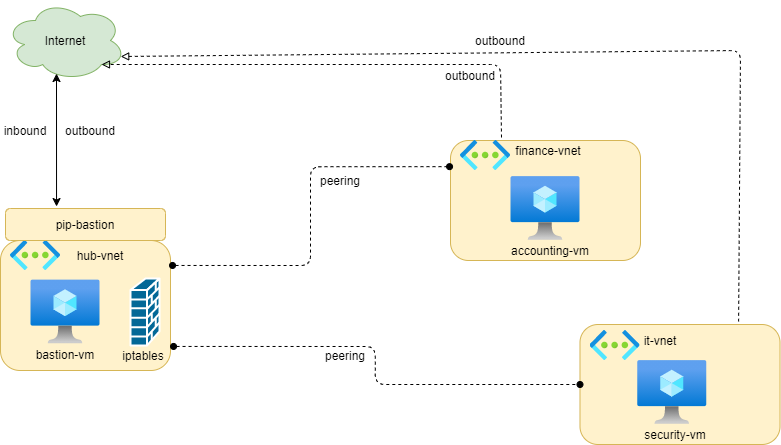
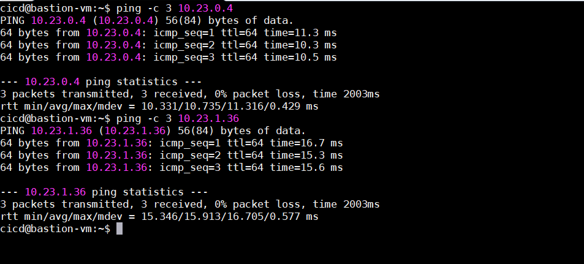
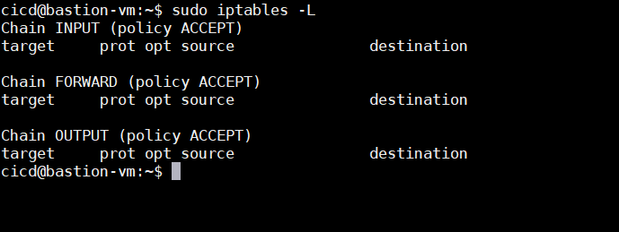
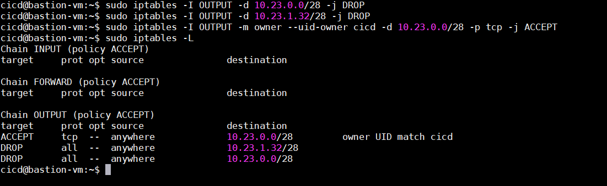
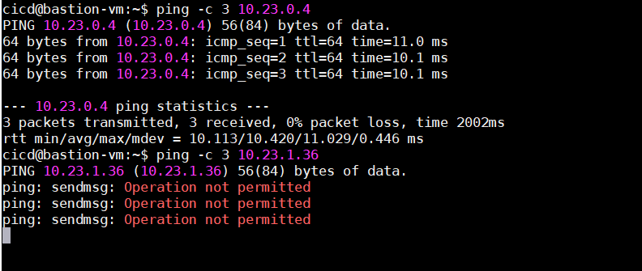
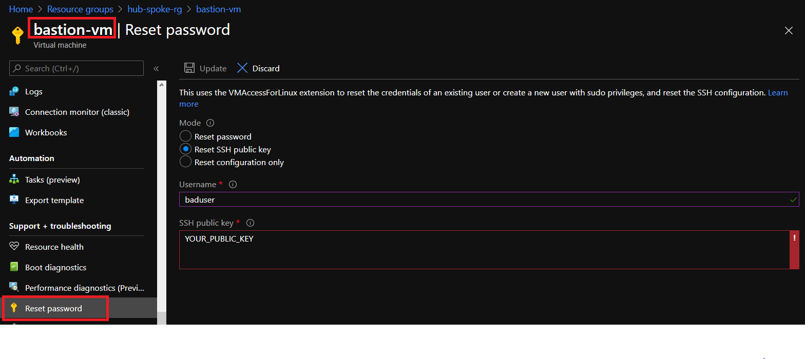
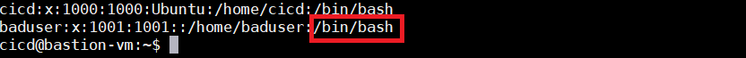

Today, we will implement a hub-spoke topology in Azure.
The hub is a virtual network in Azure that acts as a central point of connectivity to your on-premises network.
The spokes are virtual networks that peer with the hub and can be used to isolate workloads.
For more information, we refer to this document.
In our case-study, we don’t have on-premises network, so the architecture will be adjusted a little bit:

Create Hub & Spoke virtual network
At this step, we will create three virtual networks (vnet):
- Hub virtual network (hub-vnet): region France Central
- Spoke 1 virtual network (finance-vnet): region West Europe
- Spoke 2 virtual network (it-vnet): region North Europe
Create virtual machines
Then, we create three Ubuntu 18.04 virtual machines:
- bastion-vm: a jumphost machine located in hub network with a public ip to allow access from outside
- accounting-vm: an accounting vm located in spoke1 (finance) network without public ip. The access is allowed only from the jump host machine.
- security-vm: a security vm located in spoke2 (it) network without public ip. The access is allowed only from the jump host machine.
Add peering between hub network and spokes network
By default, the traffic cannot flow from one virtual network to another virtual network. We need to add the peering (two way) to allow the traffic flow from the hub network to each spoke network.
Test connectivity from jumphost on hub network to the vm on each spoke
When the peering is done, the traffic can flow from the hub network to each spoke network. So, we could check this connectivity from bastion-vm:
ping -c 3 10.23.0.4
ping -c 3 10.23.1.36

Restriction access to spoke with iptables
By default, the firewall iptables on the bastion-vm is empty. It means that all users could access to spoke vm (accounting-vm and security-vm).

We need to configure the firewall to restrict access. Firstly, run the below command to block all access to spoke networks:
sudo iptables -I OUTPUT -d 10.23.0.0/28 -j DROP
sudo iptables -I OUTPUT -d 10.23.1.32/28 -j DROP
Then, we could give access to a specific user to a specific network. For example, we could give cicd user to have only access to finance-subnet
sudo iptables -I OUTPUT -m owner --uid-owner cicd -d 10.23.0.0/28 -j ACCEPT

Now, the access of cicd user is restricted only to finance-subnet. The traffic to it-subnet is denied.

Add new user on jump host machine
Yeah. The firewall on jump host machine (bastion-vm) works as expected. What if you need to give access to some new users?
You may think about Azure Portal. It has a built-in functionality Reset password allowing you to create a new user. Let’s do that.

Oops!!! Our user is created via Azure Portal with /bin/bash. It means that this user can open a shell session on the jump host machine!!!
It is dangerous.
The user may have a shell on the spoke machines but you never give the user a shell on the jump host machine (except this user belongs to your team).

Instead of using Reset password functionality on Azure Portal. You could run a script to achieve the same job. Let’s delete the baduser:
sudo userdel baduser -r
And then create a gooduser with /bin/false:
/bin/bash
sudo -i
useradd -m --shell /bin/false gooduser
mkdir -p /home/gooduser/.ssh/
echo "[USER_PUBLIC_KEY]" > /home/gooduser/.ssh/authorized_keys
Now, you could configure the firewall iptables to give access to this user to subnets that you want:
sudo iptables -I OUTPUT -m owner --uid-owner gooduser -d 10.23.0.0/28 -j ACCEPT
sudo iptables -I OUTPUT -m owner --uid-owner gooduser -d 10.23.1.32/28 -j ACCEPT